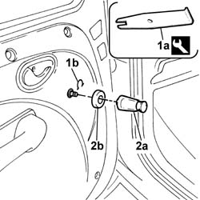

7005D38 front side door manual window mechanism handle ring-nut - r r
- Path
- Procedures > 70 FITTINGS > 7005 PASSENGER COMPARTMENT FRONT SIDE DOORS > 7005D front side door window glasses > 7005D38 front side door manual window mechanism handle ring-nut - r r
- Kind
- repair procedure (removal / refitting; the operation number is the code)
- Applies to
- all engines; all production periods
- Interactive page
- https://sloeber94.github.io/elrnDB-fDbl/en/#/2585008
Applies to: all engines; all production periods; only with equipment: Cargo trim level
 Removing
Removing
 Refitting
Refitting1. Using the tool (1a), prise off the retaining clip (1b).
 | Name | Country |
|---|---|---|
1a | Tool | 1.878.034.000 |
2. Remove the handle (2a) and recover the spacer (2b).

Applies to: all engines; all production periods; only with equipment: Cargo trim level
Refitting
RemovingFirst position the spacer and then the window lift handle.
Fit the retaining clip.
Topics that link to this page (9)
- M05 MANUAL FRONT WINDOWS NOT WORKING
- 7005A05 front side door water guard protection r r or arrange
- 7005D15 front side door descending window glass r r
- 7005D23 front side door descending window glass guide one r r
- 7005D35 front side door manual window glass r r
- 7005E10 front side door inner panel - r r for replacement
- 7005E38 front side door interior handle-r r
- 7005E39 grab-handle reinforcement - r r
- 7005M21 front side door electrically operated window - r r